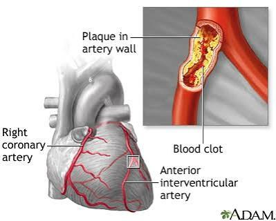
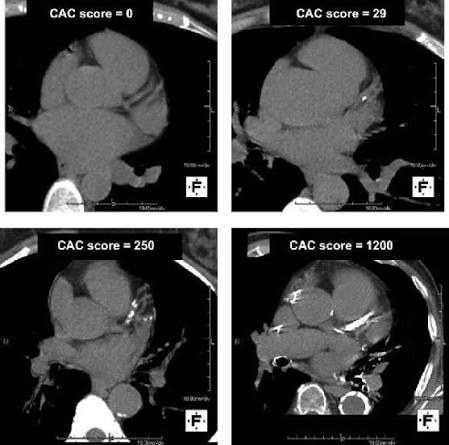
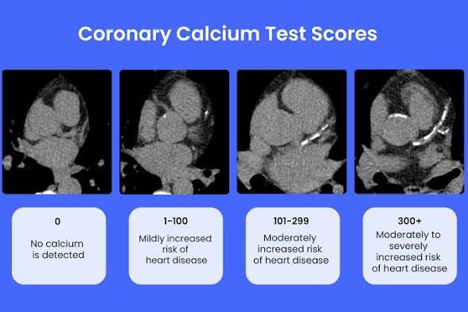

Plain-language explanations of common conditions, each built around one figure used in clinic: what it shows, what it means, and what can be done about it.
Filter by topic.
CardiometabolicDisease State Education
Coronary atherosclerosis

Image: A.D.A.M., Inc.
Plaque is a pocket of cholesterol, inflammatory cells and scar tissue inside the artery wall. Most heart attacks happen when the thin cap over a plaque cracks and a clot forms on top, not from a slow narrowing of the pipe. LDL cholesterol is the cause, and lowering it earlier and for longer is the main treatment.
Image: Unattributed CT reconstruction; credit to be confirmed

Image: Published figure; credit to be confirmed

Image: Patient-education graphic; credit to be confirmed
A quick, low-dose CT counts calcified plaque in the heart arteries, seen as bright white specks. Zero means low near-term risk in most people; 100 or more means a statin is recommended; 1000 or more carries risk similar to someone who has already had a heart attack. Calcium is a footprint of plaque, so soft plaque can still be present.
Image: Published IVUS figure; credit to be confirmed
Ultrasound from inside the artery shows plaque shrinking in one person and growing in another over 13 months. Shrinkage happens when LDL is lowered enough, and the remaining plaque becomes more stable.
Image: Data from REVERSAL (JAMA 2004), ASTEROID (JAMA 2006), SATURN (NEJM 2011), PRECISE-IVUS (JACC 2015); figure credit to be confirmed
Each dot is one arm of a clinical trial. Plaque grew when treated LDL averaged around 110 mg/dL and shrank once it was roughly below 70. This is the evidence behind the lower LDL goals in the 2026 ACC/AHA guideline.
A DXA scan compares your bone density with a healthy young adult as a T-score: −1.0 or higher is normal, −1.0 to −2.5 is low bone mass, −2.5 or lower is osteoporosis. Both hip and spine are scanned and the lowest site sets the diagnosis. A hip or spine fracture from a minor fall means osteoporosis whatever the number.
Perimenopause usually starts in the mid-to-late 40s, and estrogen swings up and down rather than falling smoothly, which is why symptoms come and go. Menopause is confirmed after 12 months without a period, at a median age of about 51. Hot flashes last a median of about seven years.
Falling estrogen shows up as hot flashes, poor sleep, mood change and vaginal and urinary symptoms, and silently as faster bone loss and rising LDL. Hormone therapy is the most effective treatment for hot flashes and protects bone, with the best balance when started before 60 or within 10 years of menopause.
Images belong to the sources credited under each one and are used here for education. Rights holders can contact hello@threadmed.org to request a change or removal.